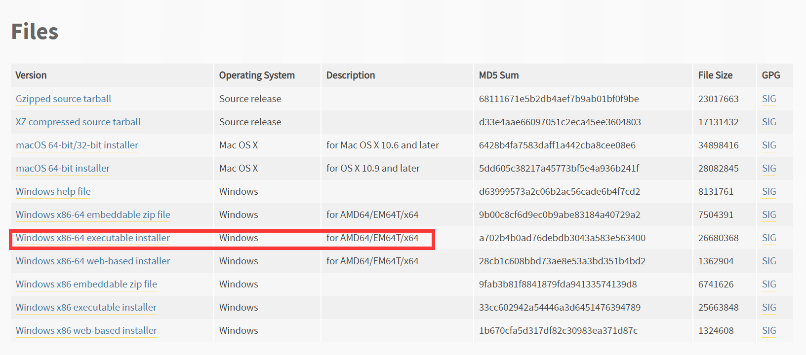
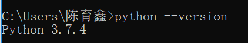
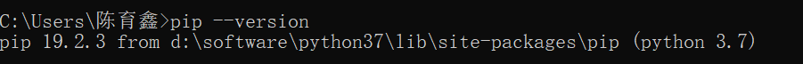
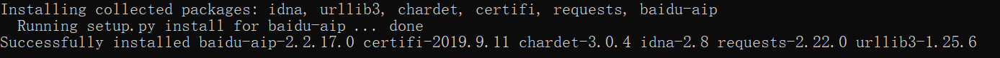
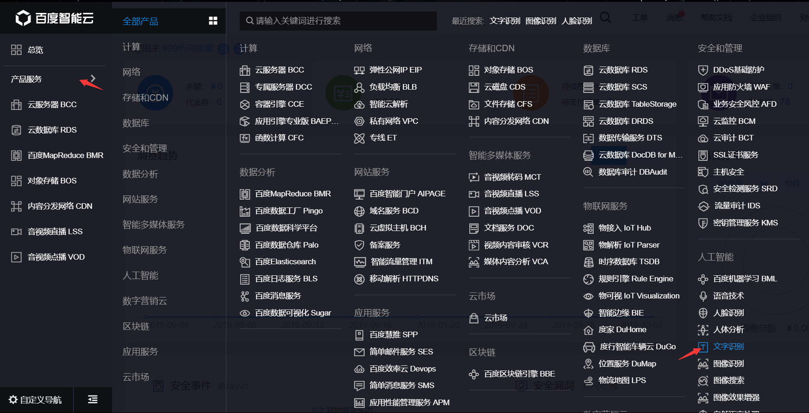
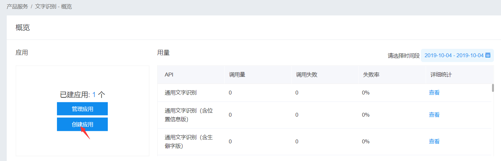
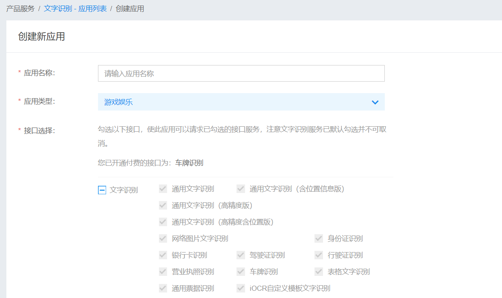
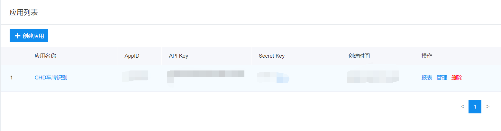
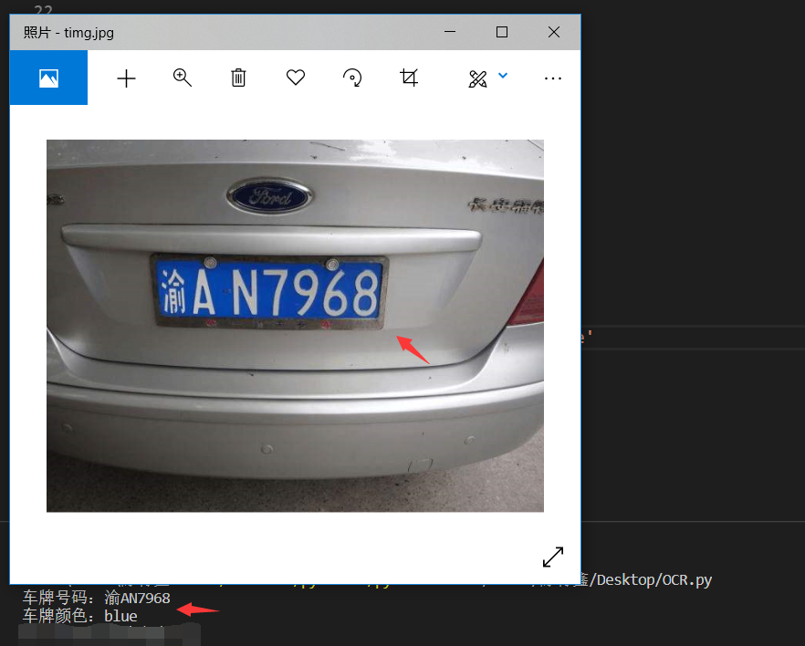

一个小需求---实现车牌识别。
目前有两个想法
1. 调云在线的接口或者使用SDK做开发（配置环境和编译第三方库很麻烦，当然使用python可以避免这些问题）
2. 自己实现车牌识别算法（复杂）
一开始准备使用百度云文字识别C++ SDK来做，发现需要准备curl、jsoncpp和OpenCV，并且curl和jsoncpp需要自己编译，很麻烦，所以换用了python来做，真的是顺畅简单。
python官网下载地址：https://www.python.org/downloads/release/python-374/ 建议直接下载安装版installer（看对系统和位数）

打开安装包无脑安装即可。安装好之后，看一下是否安装成功。
cmd
python --version
参考https://cloud.baidu.com/doc/OCR/s/pjwvxzmtc文档，安装python SDK
查看pip版本（python环境自带，但是要注意版本）
pip --version
如果版本不合适，那么自行升级pip
pip install -U pip安装baidu-aip
pip install baidu-aip（安装成功的样子）
现在我们的百度云SDK就安装好了，下来创建应用
登录百度云（没账号注册一下）

创建应用

自己填一下

现在我们就创建好了车牌识别的应用，点击应用列表可查看。

这里的APPID、API KEY、Secret Key要在代码中使用。（注意不要泄漏）
python代码实现
1 '''
2 Statement
3 1. using the file
4 2. prepare a image path and call func "get_license_plate(filePath)"
5 3. you can get a json object
6 4. get the info from the pbject
7 example :
8 {
9 "log_id": 3583925545,
10 "words_result": {
11 "color": "blue",
12 "number": "苏HS7766"
13 }
14 }
15 '''
16
17 from aip import AipOcr
18 import json
19
20 """get img"""
21 def get_file_content(filePath):
22 with open(filePath, 'rb') as fp:
23 return fp.read()
24
25 """ get licsense plate """
26 def get_license_plate(filePath):
27 """ APPID AK SK """
28 APP_ID = '********'
29 API_KEY = '**************'
30 SECRET_KEY = '******************'
31
32 """ create client """
33 client = AipOcr(APP_ID, API_KEY, SECRET_KEY)
34
35 image = get_file_content(filePath)
36
37 """ 调用车牌识别 """
38 res = client.licensePlate(image)
39 return res
40
41
42 """ call example """
43 str = 'C:\\Users\\***\\Desktop\\big.jpg' """ 照片绝对地址 """
44 res = get_license_plate(str)
45 print('车牌号码：' + res['words_result']['number'])
46 print('车牌颜色：' + res['words_result']['color'])代码分解
引入库
from aip import AipOcr """百度云SDK"""
import json """json库"""创建客户端
""" APPID AK SK 自己创建的应用中的数据"""
APP_ID = '*******'
API_KEY = '***************'
SECRET_KEY = '******************'
""" create client """
client = AipOcr(APP_ID, API_KEY, SECRET_KEY)调用接口得到车牌识别结果
image = get_file_content(filePath)
""" 调用车牌识别 """
res = client.licensePlate(image)这里的res是一个json对象/一个dict
例子
{
"log_id": 3583925545,
"words_result": {
"color": "blue",
"number": "苏HS7766"
}
}可以使用res['listname']['listname']形式获取字典数据
print('车牌号码：' + res['words_result']['number'])
print('车牌颜色：' + res['words_result']['color'])至此，我们就实现了使用百度云SDK，通过编写python代码调用接口的车牌识别需求。

【1】百度云API文档：https://cloud.baidu.com/doc/OCR/s/pjwvxzmtc/
【2】python pip安装与使用：https://www.runoob.com/w3cnote/python-pip-install-usage.html
【3】python官网：https://www.python.org/downloads/release/python-374/